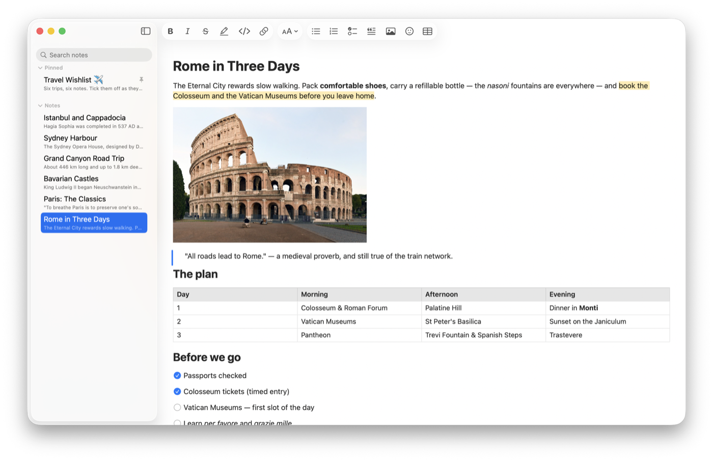

MDitor
Notes that are just files.
Version 1.4 · macOS 15 Sequoia or later · Apple Silicon and Intel · Free
Signed and notarized by Apple · All releases

MDitor is a native Mac app for writing in Markdown, with the ease of Notes and none of the lock-in. Every note is an ordinary Markdown file in a folder you choose, saved as you type — readable in any editor, synced by whatever syncs your files, and yours forever.
Highlights
- What you see is the note: no asterisks or brackets in the way.
- Pictures, tables and checklists, pasted, dropped or added in a click.
- Paste from anywhere — web pages, Google Docs, Word — with formatting.
- Gallery view, pinned notes, search across every note in your folder.
- Notes in their own windows, floating on top like sticky notes.
- Private: no account, no tracking, and nothing leaves your Mac.
Install
- Download MDitor.dmg and open it.
- Drag MDitor into Applications.
- Open MDitor and choose a folder for your notes — any folder, even one in iCloud Drive or Dropbox.
To update, download the newest version and replace the old one. Your notes and settings stay as they are.